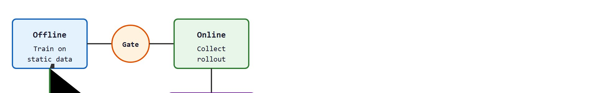
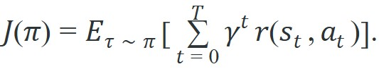
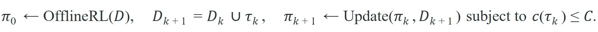

"Offline training gives the policy a safe place to start. Online fine-tuning is where it learns what the dataset could not tell it."
A Careful Control Loop
This section assumes familiarity with distribution shift and extrapolation error from section 25.2, and with conservative objectives (CQL, IQL) from section 25.3, because the safety gate in offline-to-online fine-tuning is built directly on those pessimistic value estimates. The rigorous evaluation contract introduced here is formalized in section 25.5. The online interaction budget and support-guard ideas recur in Part 5 alongside hierarchical skill discovery in section 26.3, where individual skills are fine-tuned from offline primitives using similarly constrained online rollouts.
A warehouse robot trained on thousands of logged picks freezes when a bin arrives at an unexpected angle: the offline dataset simply never covered that pose. Retraining from scratch wastes everything learned. But unleashing unconstrained online RL from that frozen start risks costly hardware failures within minutes. Offline-to-online fine-tuning breaks this deadlock: start with a conservative offline policy that knows what it knows, then spend a tightly budgeted sequence of real rollouts to patch exactly the gaps the data left behind. Right now this is the dominant strategy for deploying capable robot policies without prohibitive data collection or dangerous unconstrained exploration. You will implement the safety gate, track support drift, and watch a policy adapt to novel conditions without forgetting what it already mastered.
A robot policy can spend thousands of offline iterations learning caution, then throw it all away in a single online gradient step: that one update on real hardware can overwrite the conservatism built across the entire offline phase, leaving the gripper at its most aggressive exactly when it has the least evidence. Figure 25.4A shows the two stages at a glance, a policy pretrained on a large offline dataset transferred to careful online interaction, capturing both the performance jump and the catastrophic forgetting risk that the rest of this section works to control.
Offline RL starts from a static dataset. Examples include the 50,000-episode multi-task logs in robomimic and a Franka Panda arm's recorded bin-picking sessions. Before any robot rollout is trusted, the method must make four things explicit. The behavior policy is the scripted controller or human teleoperator that generated the logged data. The support envelope is the region of joint-angle and gripper-pose space the dataset actually covers. The reward labels come from a wrist force-torque threshold or a grasp-closure switch. The fourth is the candidate-policy update itself. The gap that bites in practice is concrete: a Panda trained only on logged top-down picks has zero recorded data for a bin tilted 30 degrees, so its Q-value for that grasp is an extrapolation a CQL or IQL critic must treat as untrusted, not a measurement.
Offline-to-online fine-tuning starts from a conservative offline policy, then spends a limited interaction budget to adapt on hardware or in a trusted simulator. The critical design choice is the safety gate: online learning may update the policy only after interventions, constraint violations, and support drift are monitored.

For Offline-to-online fine-tuning, the policy is allowed to improve only inside measured dataset support; outside that support, the value estimate should be treated as a risk signal.
The safety gate matters because robots cannot undo physical consequences. A gradient update that pushes a gripper toward an unsupported pose may shear a wrist joint, drop a fragile payload, or trigger an emergency stop that takes the cell offline. Unlike a failed rollout in simulation, one on hardware costs real time, risks real damage, and can poison subsequent updates with corrupted data. Without a gate, the first few online steps erase the offline conservatism, leaving the policy most aggressive when it has the least evidence.
Mechanistically, the safety gate runs as a pre-update check after each online rollout. It computes three signals from the collected trajectory: the total number of human or controller interventions, the worst-case support drift (typically the maximum nearest-neighbor distance from any visited state-action pair to the offline dataset), and the cumulative constraint budget remaining. If any signal exceeds its threshold, gradient updates are paused, not just slowed. The gate re-opens only after the policy has demonstrated a rollout that stays within support bounds without intervention.
So far: offline-to-online fine-tuning rests on four explicit ingredients (behavior policy, support envelope, reward labels, candidate-policy update), the gap between logged and novel poses forces the critic to extrapolate rather than measure, and the safety gate exists precisely to stop a single online gradient step from erasing that offline conservatism before its three signals (interventions, support drift, constraint budget) confirm it is safe to proceed.
A policy that adapts without a safety gate is not learning from experience; it is gambling with hardware. What happens when the safety gate fails and the robot takes its first unconstrained online gradient step on hardware? In practice, that single update can overwrite the conservative value estimates built across thousands of offline training iterations, leaving the policy more aggressive at exactly the moment it has the least real-world evidence. Keeping that gate closed until the evidence warrants opening it is the central engineering discipline of offline-to-online fine-tuning.
The motivation for offline-to-online fine-tuning is practical: offline datasets are always incomplete. A warehouse robot trained only on logged picks has seen a narrow slice of gripper poses, lighting conditions, and object placements. When it encounters a novel bin layout, its value estimates for untried grasps are extrapolations, not measurements. The offline phase builds a conservative prior. The online phase corrects those extrapolations with real feedback, but only as fast as the safety budget allows. The scale shows why this matters. Pure online RL typically needs 40,000 to 80,000 rollouts collected from scratch to reach a given manipulation success rate. Starting from a strong offline prior and fine-tuning with a safety gate reaches the same rate in roughly 50 to 300 real rollouts. Without this two-phase structure, either the robot never adapts (pure offline) or it explores dangerously from scratch (pure online).
For Offline-to-online fine-tuning, the baseline objective is useful only after the data distribution and robot action scale are fixed; otherwise expected return can reward unsupported commands.

For Offline-to-online fine-tuning, the practical objective needs a pessimism or support term because training cannot ask the real robot whether a novel action is safe.

For Offline-to-online fine-tuning, the pessimism term should expose unsupported gripper poses, contact modes, saturation regions, missing viewpoints, or reset states rather than hiding them in one value estimate.
Those abstract symbols, the constraint budget $C$ and the pessimism term, only become trustworthy once you watch them evaluated on concrete rollout numbers, which is exactly what the following trace does.
Code Fragment 1 for Offline-to-online fine-tuning compares candidate actions with dataset support and applies pessimism only after the support metric and robot action scale are explicit.
# Track whether online fine-tuning is staying inside a safety budget.
# Each rollout contributes success, intervention, and support-drift evidence.
rollouts = [
{"success": 0, "interventions": 2, "support_drift": 0.18},
{"success": 1, "interventions": 1, "support_drift": 0.12},
{"success": 1, "interventions": 0, "support_drift": 0.09},
]
max_interventions = 3
max_drift = 0.20
total_interventions = sum(r["interventions"] for r in rollouts)
worst_drift = max(r["support_drift"] for r in rollouts)
allowed = total_interventions <= max_interventions and worst_drift <= max_drift
print(f"successes={sum(r['success'] for r in rollouts)}/3")
print(f"interventions={total_interventions} worst_support_drift={worst_drift:.2f}")
print(f"continue_online_updates={allowed}")Trace the gate with budgets max_interventions = 3 and max_drift = 0.20, processing the three rollouts one at a time and accumulating evidence.
Rollout 1 reports success = 0, interventions = 2, support_drift = 0.18. Running totals: interventions = 2 (2 <= 3, OK), worst_drift = 0.18 (0.18 <= 0.20, OK). Gate stays open.
Rollout 2 reports success = 1, interventions = 1, support_drift = 0.12. Running totals: interventions = 2 + 1 = 3 (3 <= 3, exactly at the budget, still OK), worst_drift = max(0.18, 0.12) = 0.18 (OK). Gate stays open, but the intervention budget is now fully consumed.
Rollout 3 reports success = 1, interventions = 0, support_drift = 0.09. Running totals: interventions = 3 + 0 = 3 (3 <= 3, OK), worst_drift = max(0.18, 0.09) = 0.18 (OK). Final verdict: successes = 2/3, total interventions = 3, worst support drift = 0.18, so continue_online_updates = True. Notice that a single extra intervention anywhere would push the total to 4 and flip the verdict to False, halting updates even though the success rate looks healthy.
With the support guard sketched as an algorithm, the remaining question is the order of operations on a real project, which the following recipe fixes step by step.
Offline RL with a pessimistic critic is like a robot that has watched thousands of hours of cooking videos and refuses to attempt any dish it has not literally seen someone burn, spill, or salvage. The conservatism is the feature, not the bug.
Offline-to-online fine-tuning pays off when three conditions hold together: the offline dataset covers the task well enough that the initial policy succeeds at least occasionally without intervention, the online interaction budget is large enough to collect dozens of trajectories across the failure modes (not just one or two), and the reward signal is dense enough that each rollout provides a meaningful learning signal. The robomimic study (Mandlekar et al., 2021) and subsequent online fine-tuning work found that under these conditions, IQL with online fine-tuning improved success rates by roughly 15 to 30 percentage points over the offline-only baseline on simulated manipulation tasks (as of 2024, with results varying across task difficulty and dataset quality). When the offline dataset is sparse or the online budget is fewer than ten rollouts, behavior cloning trained on the same data typically matches or beats the fine-tuned policy, at a fraction of the engineering cost.
For Offline-to-online fine-tuning, use d3rlpy, robomimic, or LeRobot after the support audit is defined; the library may replace replay-buffer plumbing but must preserve dataset split, action scale, and evaluation artifact.
For Offline-to-online fine-tuning, a warehouse manipulation audit should align expert picks, recoveries, failures, behavior-cloning baseline, support distance, and offline-RL policy output in one table before reporting improvement.
Levine lab's IQL-based system pretrains a manipulation policy on logged demonstrations, then fine-tunes online with advantage-weighted updates, where the learning update for each action is scaled by how much better that action performed than the policy's average at that state, never querying out-of-support actions, letting a real arm raise grasp success on novel object placements within a few hundred rollouts. The same advantage-weighting trick that makes IQL safe offline doubles as the support guard that keeps the online phase from chasing unsupported grasps.
For Offline-to-online fine-tuning, compare behavior cloning and offline RL under the same split: BC is strongest with narrow expert demonstrations, while offline RL needs meaningful rewards, recoveries, and a visible support audit.
Offline-to-online fine-tuning fails in three characteristic ways. First, catastrophic forgetting: online gradient updates can quickly overwrite conservative value estimates. The policy then attempts actions far outside the original dataset support before the safety constraints detect the drift. Second, reward hacking on novel states: when the reward function was designed for the offline distribution, online rollouts reach state regions where the reward is technically high but physically meaningless, such as a gripper hovering at a sensor blind spot. Third, support collapse: a small online interaction budget causes new data to cluster near the first few successful trajectories. The policy then becomes brittle to any perturbation outside that cluster. Monitoring support drift explicitly (as in Code Fragment 1) is the practical defense against all three.
A common assumption is that the online fine-tuning phase is simply a continuation of offline training with the same objective, so that more online rollouts always move the policy closer to optimal behavior. This is wrong in embodied AI: the offline and online phases use fundamentally different data distributions, and the pessimistic objective that was essential offline becomes a liability online if it is not gradually relaxed under a support guard. In physical robot settings, a policy that collects 50 online rollouts without a gating mechanism can perform worse than the offline-only baseline because early online failures cluster in a narrow failure mode and bias the replay buffer, while the conservative critic simultaneously loses its calibration on states that were never in the original dataset. The correct mental model is that online fine-tuning is a constrained budget problem: each rollout is an irreversible physical event with a cost, and the value of additional rollouts depends entirely on whether the safety gate confirms the policy is still inside measurable support.
Gradually relaxing the pessimism constraint as online evidence accumulates is like a hiker descending from a cliff in fog. At the top, with no visibility, every step must stay close to the rope: trust nothing you cannot see. As the fog lifts and the ground becomes visible, the hiker can move further from the rope, but only as fast as the clearing fog allows. Dropping the rope all at once while still in fog is not confidence, it is falling. The support guard is the fog sensor: it tells you how much rope you can safely release at each step.
When switching from offline to online updates in d3rlpy, set the conservative_weight parameter of CQL (default 5.0) to at least 1.0 during the first online epoch rather than dropping it to zero. Zeroing it immediately removes the pessimism penalty before the critic has seen enough online transitions, which is the most common single cause of catastrophic forgetting in practice. A safe schedule is to halve conservative_weight every 500 online gradient steps, monitored against the support drift metric from Code Fragment 1: if worst support drift exceeds your threshold, stop halving and hold the current weight for another 500 steps.
Direction 1: Diffusion-based offline-to-online fine-tuning. Diffusion policies (Chi et al., 2023) trained offline have shown that injecting a small number of online rollouts through a score-function fine-tuning step (adjusting the denoising network's estimate of the gradient that points toward higher-probability actions) can recover from distribution shift far faster than value-based methods, because the denoising objective can be updated sample-efficiently. Work from the Stanford IRIS lab in 2024 (DPPO, Ren et al., 2024) demonstrated that wrapping a pretrained diffusion policy in a proximal-policy-optimization loop with a lightweight support penalty achieves 20-40 percent higher success than IQL baselines on long-horizon manipulation with fewer than 100 real hardware rollouts. The frontier question is whether the diffusion score function can itself serve as an uncertainty signal, replacing the need for a separate support estimator.
Direction 2: Foundation-model priors as implicit support guards. Large visuomotor foundation models such as pi0 (Black et al., Physical Intelligence, 2024) and RoboVLMs (2024) are pretrained across hundreds of robot embodiments and tasks. Rather than training a support estimator from scratch, 2024-2025 work has explored using the pretrained model's action-likelihood as a penalty term during online fine-tuning: actions that receive low log-probability under the foundation prior are penalized, providing a data-free support guard derived from broad pretraining rather than the target-domain dataset. This collapses the support-estimation and pessimism steps into a single foundation-model query, which is typically cheaper to maintain as the robot's hardware configuration changes, though this depends on the foundation model's pretraining coverage actually matching the target robot's action distribution.
Direction 3: Safe online data collection with world models. To reduce the cost of physical rollouts during fine-tuning, 2024-2025 work (TD-MPC2, Hansen et al., 2024; SWIM, Seo et al., 2024) has explored training a latent world model on the offline dataset and then generating synthetic online rollouts in model-space, with a calibrated uncertainty head that flags when the world model's predictions are unreliable. Physical rollouts are reserved for the transitions the world model cannot handle, cutting real hardware contact by a factor of 3 to 10 on standard manipulation benchmarks while preserving the safety guarantee.
Open problem for PhD students: All three directions above assume the reward function remains valid across the offline-to-online boundary, but in practice the reward sensor (a wrist force-torque gauge, a grasp-closure switch, a vision-based success detector) can drift or fail during the online phase, producing spurious reward signals that the safety gate cannot detect because the gate monitors action support, not reward validity. Designing an online fine-tuning protocol that co-monitors reward-sensor reliability, triggers a reward audit when the policy's learned value function diverges from the raw sensor signal, and gracefully falls back to behavior cloning when the reward is unreliable is an open and practically important problem with no satisfying solution as of 2025.
For Offline-to-online fine-tuning, trust requires naming the behavior policy, support estimator, pessimism mechanism, BC baseline, and exact evaluation artifact.
Offline-to-online fine-tuning is useful when it makes the perception-action loop more reliable, not when it merely adds a more impressive model name.
Design a method-matched experiment for Offline-to-online fine-tuning. Specify the environment, observation schema, action interface, metric, and one perturbation that targets the section's core assumption.
Beginner (weekend): Support drift monitor for D4RL hopper. Use d3rlpy to train an IQL policy on the D4RL hopper-medium dataset in Gymnasium, then implement the nearest-neighbor support drift metric from Code Fragment 1 and plot how drift evolves across 10 online fine-tuning epochs. The key challenge is choosing a meaningful distance metric in a continuous state-action space where naive Euclidean distance conflates joint angles with velocities of different scales.
Intermediate (1-2 weeks): Gated offline-to-online fine-tuning in MuJoCo FetchPick. Train a CQL baseline on a 500-episode offline dataset collected by a scripted policy in MuJoCo FetchPickAndPlace, implement the three-signal safety gate (interventions, support drift, constraint budget), and compare final success rate against an ungated fine-tuning baseline after 50 online rollouts. The key challenge is implementing a reward-shaping signal dense enough to produce a learning update within 50 episodes while keeping the safety gate calibrated against catastrophic forgetting of the conservative prior.
Goal: Measure how a support-drift gate changes the online fine-tuning trajectory of an offline-pretrained policy, and observe catastrophic forgetting when the gate is removed.
Tools needed: Python with d3rlpy, Gymnasium, and the D4RL hopper-medium dataset (about 15 minutes to install and download). A CPU is sufficient for a short run.
Steps: Train an IQL policy for a few thousand offline gradient steps on hopper-medium and record its evaluation return as the offline baseline. Then run 10 online fine-tuning epochs twice: once ungated (apply every gradient update), and once gated using the nearest-neighbor support-drift metric from Code Fragment 1, where you pause updates whenever worst drift exceeds 0.20.
What to vary: the drift threshold (try 0.10, 0.20, 0.40), the online interaction budget (10 vs 50 rollouts per epoch), and the conservative weight schedule (constant vs halved every 500 steps).
What to observe: plot evaluation return per epoch for both runs against the offline baseline. The ungated run often spikes then collapses below the baseline (catastrophic forgetting), while the gated run climbs more slowly but rarely drops under the baseline. Note how a tighter threshold trades adaptation speed for stability.
This section grounded offline-to-online fine-tuning in an explicit robot-data contract: observations, actions, demonstrations, evaluation splits, and failure labels. The next reading step is Section 25.5, where the same contract is carried into the next technique or chapter.
IQL avoids direct evaluation of unseen actions and extracts policies through advantage-weighted behavioral cloning. It is a practical complement to CQL when teaching conservative improvement from static data.
CQL addresses overestimation from distribution shift by learning conservative value estimates. It is essential for understanding why offline RL must avoid unsupported actions.
D4RL: Datasets for Deep Data-Driven Reinforcement Learning.
D4RL popularized standardized offline RL datasets and benchmark tasks. Readers should use it as a cautionary baseline source, since robot deployment needs extra support checks beyond benchmark scores.
d3rlpy: Offline Deep Reinforcement Learning Library.
d3rlpy implements many offline RL algorithms behind a consistent Python API. It is useful for library-shortcut experiments after the reader understands support mismatch and conservative objectives.
robomimic Study: What Matters in Learning from Offline Human Demonstrations for Robot Manipulation.
The robomimic study compares offline learning algorithms across simulated and real manipulation tasks. It connects the chapter's offline RL theory to robot-specific data quality and evaluation concerns.